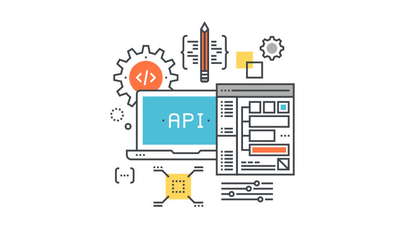
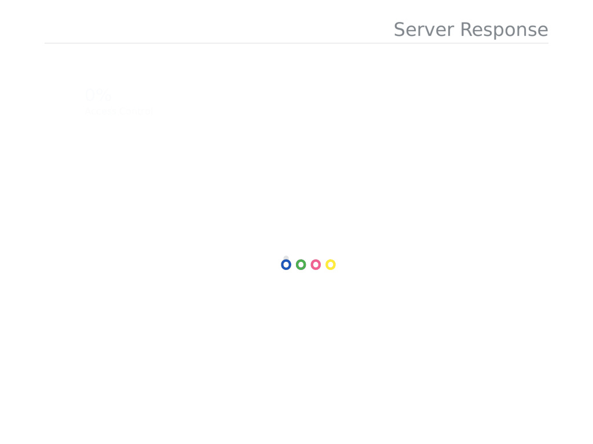
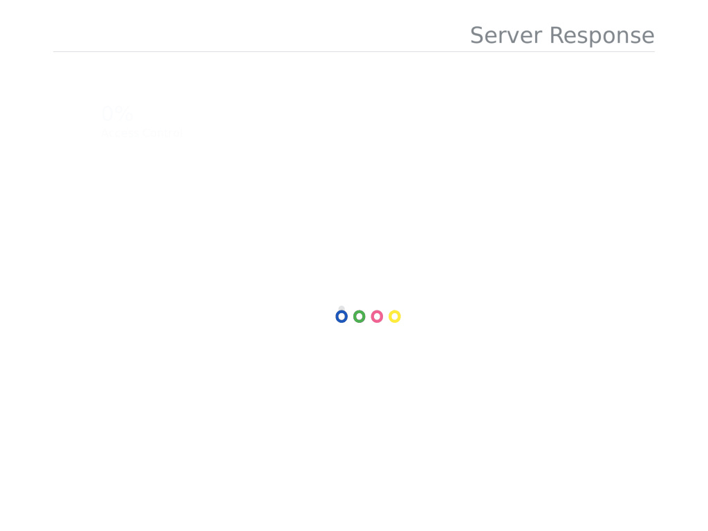

API Testing & Network Programming
Echo Client-Server Application: Implement a client and a server that communicate over a network using TCP. The server is essentially an echo server, which simply echoes the message it rceives from the client
 

Performing RTT and Throughput Measurements: Measure the round trip time (RTT) and throughput of the path connecting the client to the server.
To measure RTT, you will use TCP to send and receive messages of size 1, 100, 200, 400, 800, and 1000 bytes. Measuring the throughput will require the use of TCP to send and receive messages of size 1K, 2K, 4K, 8K, 16K and 32K bytes.
For each measurement and for each message size, the client will send at least ten probe messages to the server, which will echo back the messages. See Github to browse code.